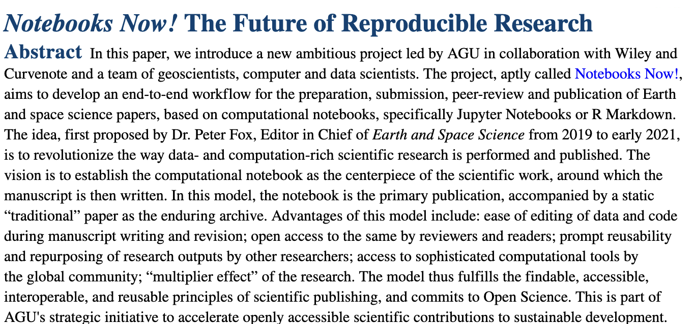
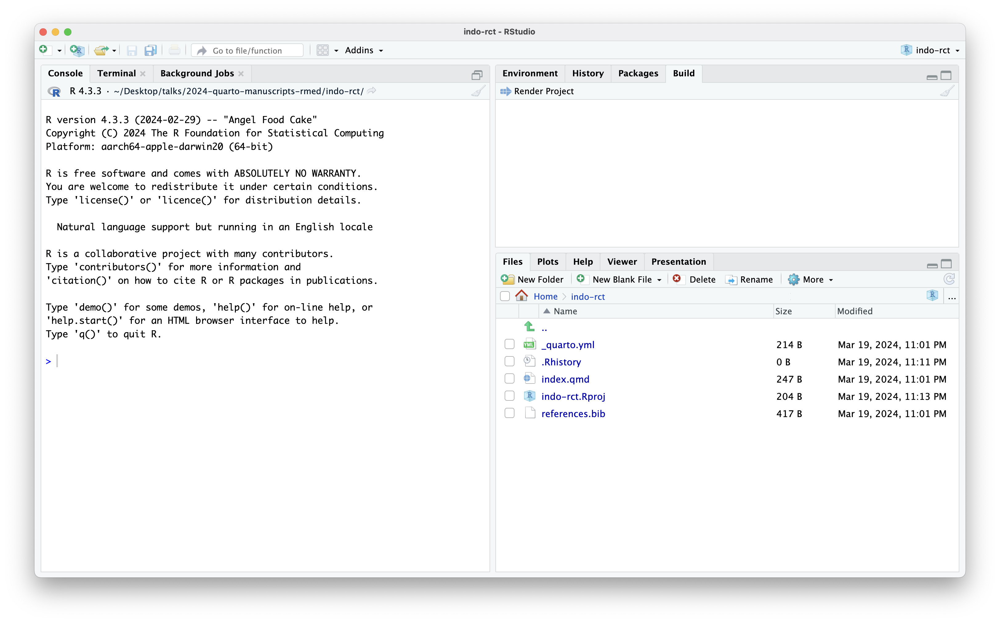
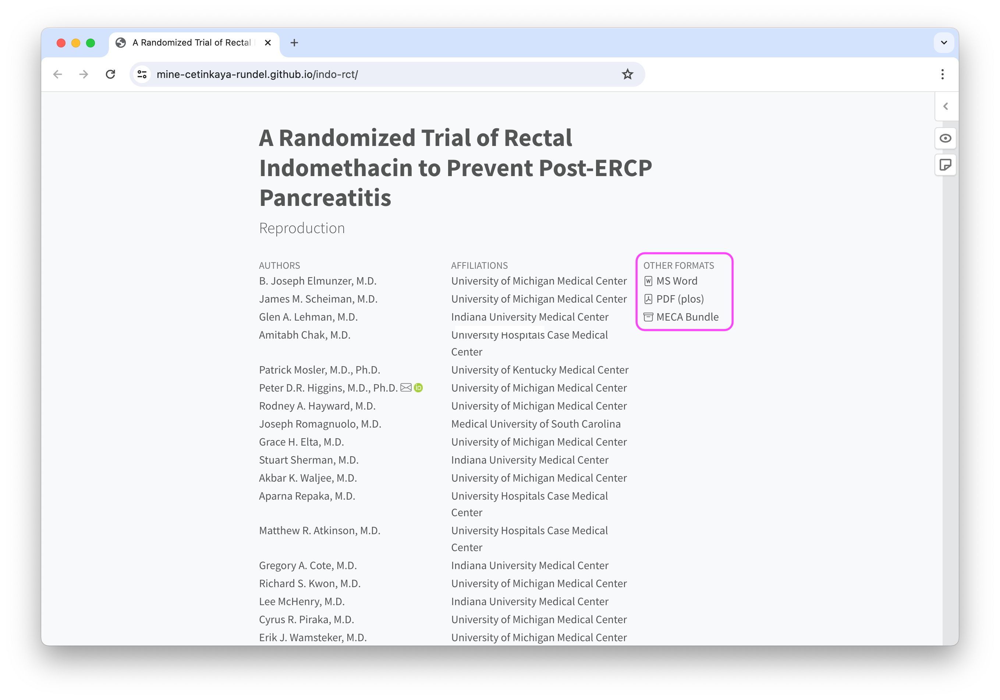
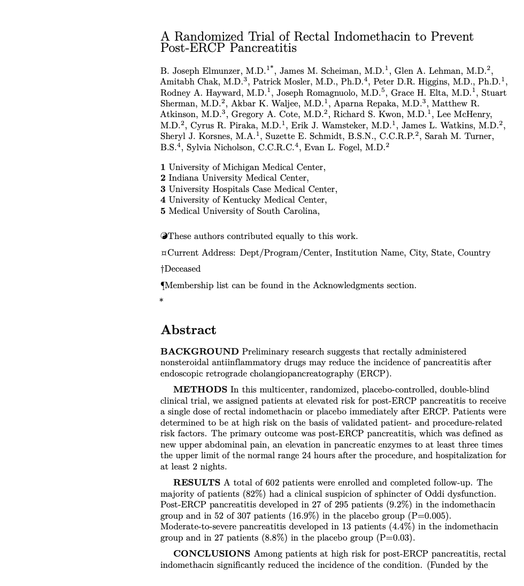
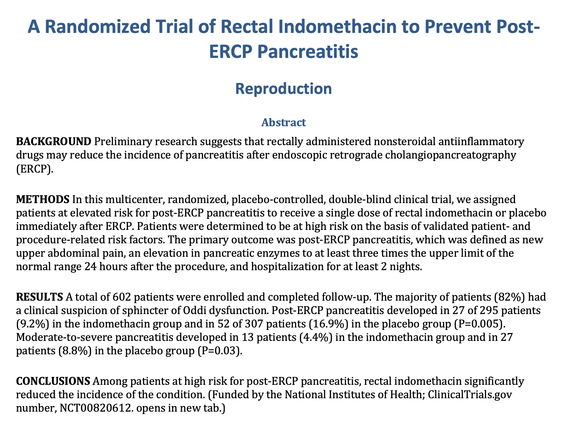

Ospedale Del Cuore
manuscipt-template
Can run all code in a single file, and don’t mind running it over and over again with each edit.
e.g. Data Science 101 - HW 1, Stat 101 - Final project, a blog post, a tutorial, a not-too-extensive consulting report, etc.
Can run all code in a single file, and don’t mind running it over and over again with each edit, and need an output that conforms to journal style.
e.g., a not-too-computational journal article.
or
or
A notebook is a document that contains both code and narrative:
.ipynb).qmd) – a potential mindshiftMost computational science is born in notebooks
and dies ends in PDF or Word documents

More at https://data.agu.org/notebooks-now.
that are not just PDFs that are the outputs of a single qmd file
An end-to-end scholarly publishing workflow that treats Jupyter and Quarto notebooks as a primary element of the scientific record.
A publication process that elevates transparent and reproducible work by authors, where data and software, together with narrative, are documented, shared, and archived.
New forms of credit to the wider research community, including research software engineers.
type: manuscripttype: manuscriptQuarto manuscripts (Quarto 1.4+), in addition to doing everything you can do with journal articles, can
produce manuscripts in multiple formats (including LaTeX or MS Word formats required by journals), and give readers easy access to all of the formats through a website
publish computations from one or more notebooks alongside the manuscript, allowing readers to dive into your code and view it or interact with it in a virtual environment
quarto create project manuscript <name>Manuscripts ♥️ Git + GitHub
Track your project with Git and host on GitHub for easy publishing.
Creating project at /Users/mine/indo-rct:
- Created _quarto.yml
- Created index.qmd
- Created references.bib
? Open With
vscode
❯ rstudio
(don't open)
_quarto.yml
In quarto.yml of the project:
In index.qmd of the project:
index.qmd
title: A Randomized Trial of Rectal Indomethacin to Prevent Post-ERCP Pancreatitis
subtitle: Reproduction
authors:
- name: B. Joseph Elmunzer, M.D.
affiliation: University of Michigan Medical Center
roles: writing
corresponding: true
- name: James M. Scheiman, M.D.
affiliation: University of Michigan Medical Center
- name: Glen A. Lehman, M.D.
affiliation: Indiana University Medical Center
- name: Amitabh Chak, M.D.
affiliation: University Hospitals Case Medical Center
- name: Patrick Mosler, M.D., Ph.D.
affiliation: University of Kentucky Medical Center
- name: Peter D.R. Higgins, M.D., Ph.D.
affiliation: University of Michigan Medical Center
orcid: 0000-0003-1602-4341
email: phiggins@umich.edu
- name: Rodney A. Hayward, M.D.
affiliation: University of Michigan Medical Center
- name: Joseph Romagnuolo, M.D.
affiliation: Medical University of South Carolina
- name: Grace H. Elta, M.D.
affiliation: University of Michigan Medical Center
- name: Stuart Sherman, M.D.
affiliation: Indiana University Medical Center
- name: Akbar K. Waljee, M.D.
affiliation: University of Michigan Medical Center
- name: Aparna Repaka, M.D.
affiliation: University Hospitals Case Medical Center
- name: Matthew R. Atkinson, M.D.
affiliation: University Hospitals Case Medical Center
- name: Gregory A. Cote, M.D.
affiliation: Indiana University Medical Center
- name: Richard S. Kwon, M.D.
affiliation: University of Michigan Medical Center
- name: Lee McHenry, M.D.
affiliation: Indiana University Medical Center
- name: Cyrus R. Piraka, M.D.
affiliation: University of Michigan Medical Center
- name: Erik J. Wamsteker, M.D.
affiliation: University of Michigan Medical Center
- name: James L. Watkins, M.D.
affiliation: Indiana University Medical Center
- name: Sheryl J. Korsnes, M.A.
affiliation: University of Michigan Medical Center
- name: Suzette E. Schmidt, B.S.N., C.C.R.P.
affiliation: Indiana University Medical Center
- name: Sarah M. Turner, B.S.
affiliation: University of Kentucky Medical Center
- name: Sylvia Nicholson, C.C.R.C.
affiliation: University of Kentucky Medical Center
- name: Evan L. Fogel, M.D.
affiliation: Indiana University Medical Center
bibliography: references.bib
abstract: |
**BACKGROUND**
Preliminary research suggests that rectally administered nonsteroidal antiinflammatory drugs may reduce the incidence of pancreatitis after endoscopic retrograde cholangiopancreatography (ERCP).
**METHODS**
In this multicenter, randomized, placebo-controlled, double-blind clinical trial, we assigned patients at elevated risk for post-ERCP pancreatitis to receive a single dose of rectal indomethacin or placebo immediately after ERCP. Patients were determined to be at high risk on the basis of validated patient- and procedure-related risk factors. The primary outcome was post-ERCP pancreatitis, which was defined as new upper abdominal pain, an elevation in pancreatic enzymes to at least three times the upper limit of the normal range 24 hours after the procedure, and hospitalization for at least 2 nights.
**RESULTS**
A total of 602 patients were enrolled and completed follow-up. The majority of patients (82%) had a clinical suspicion of sphincter of Oddi dysfunction. Post-ERCP pancreatitis developed in 27 of 295 patients (9.2%) in the indomethacin group and in 52 of 307 patients (16.9%) in the placebo group (P=0.005). Moderate-to-severe pancreatitis developed in 13 patients (4.4%) in the indomethacin group and in 27 patients (8.8%) in the placebo group (P=0.03).
**CONCLUSIONS**
Among patients at high risk for post-ERCP pancreatitis, rectal indomethacin significantly reduced the incidence of the condition. (Funded by the National Institutes of Health; ClinicalTrials.gov number, NCT00820612. opens in new tab.)from source \(\rightarrow\) only relevant / required metadata in manuscript:

from source \(\rightarrow\) only relevant / required metadata in manuscript:

about authoring Quarto documents in RStudio
Demo